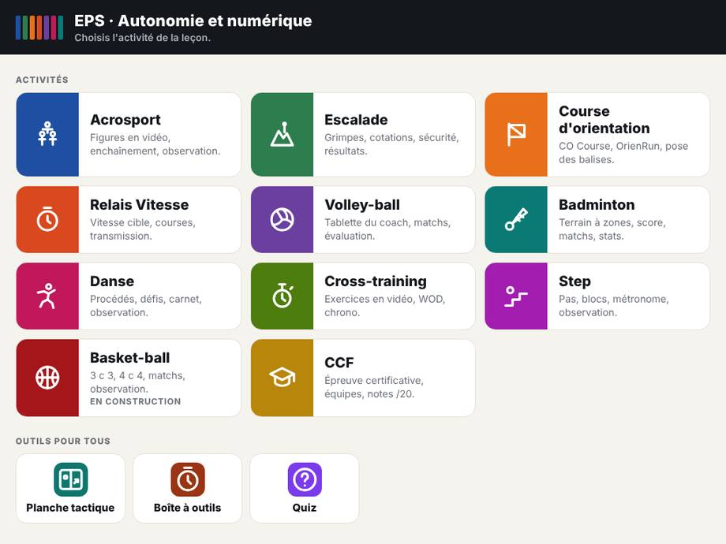
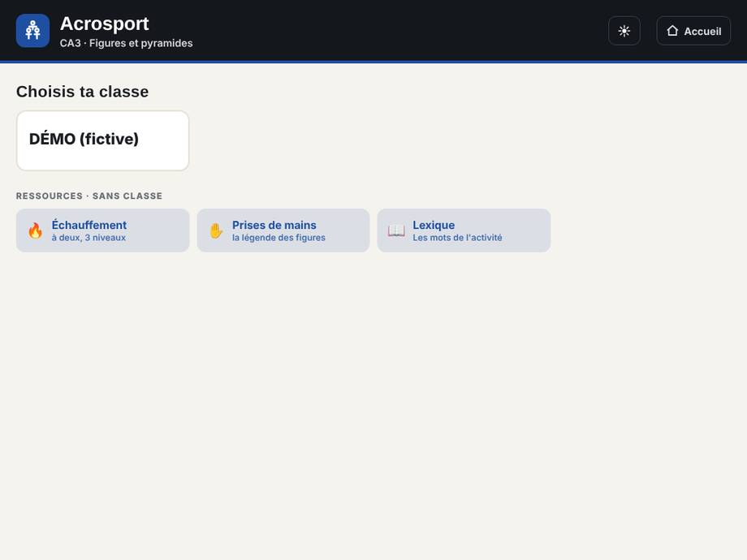
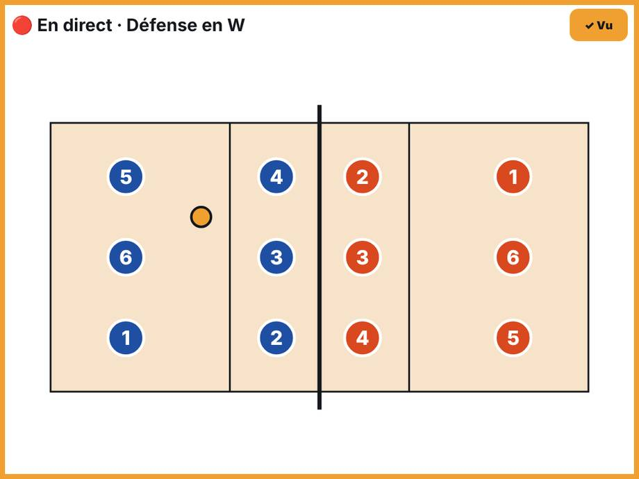
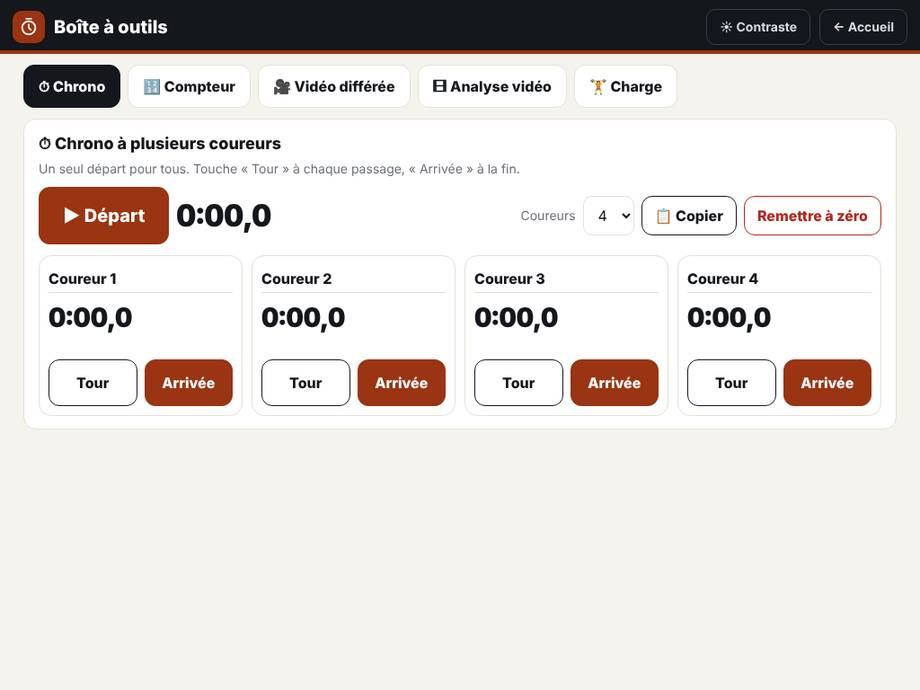
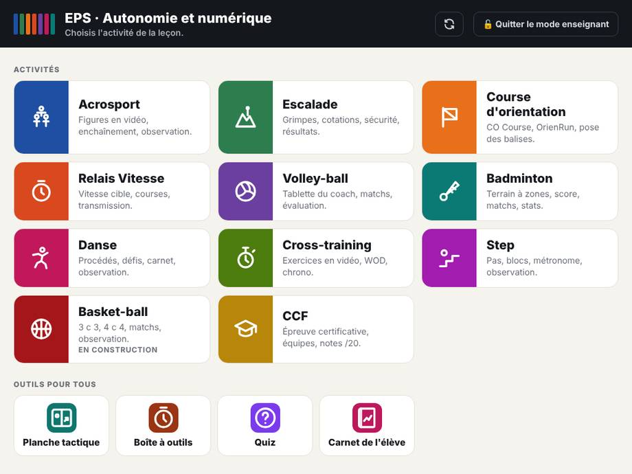
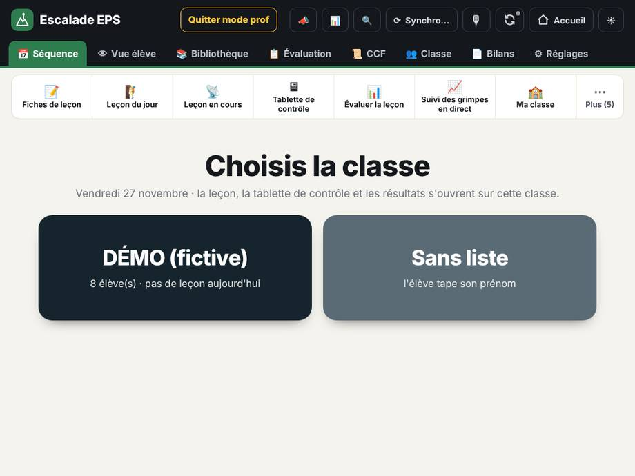
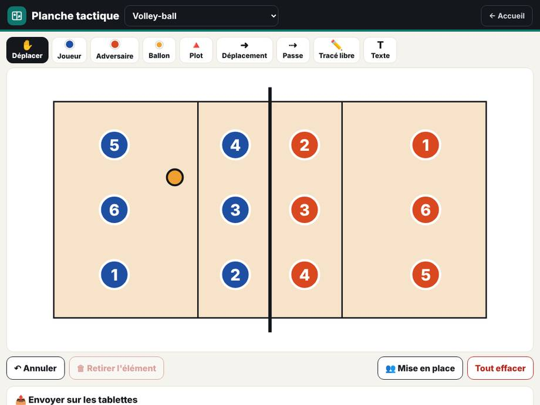
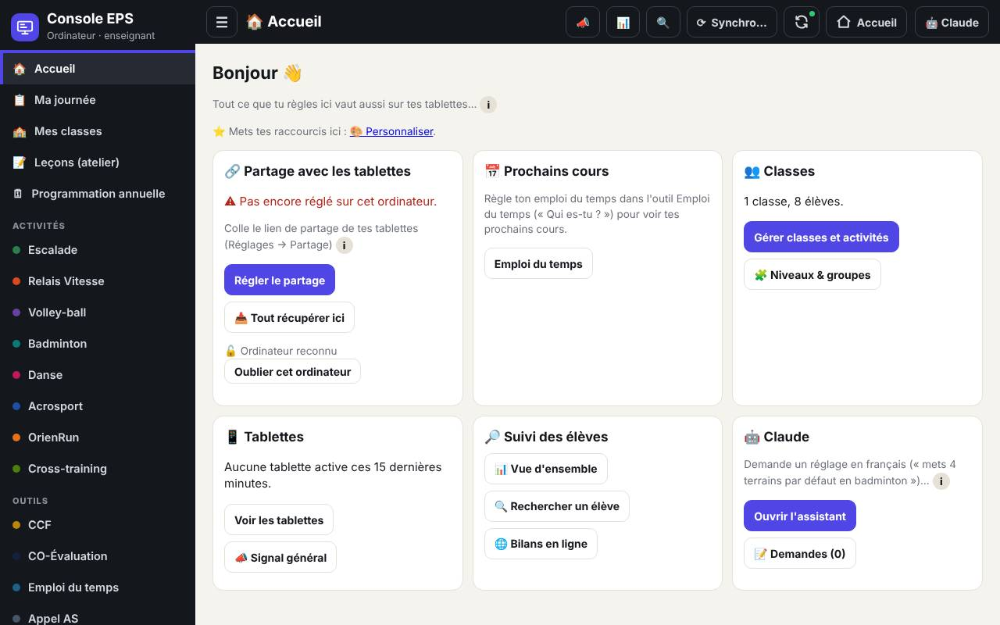
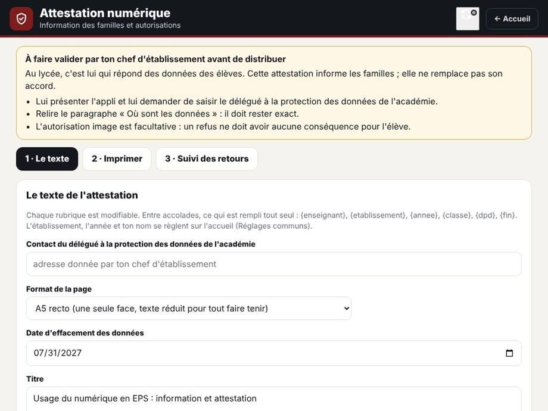

Saisis ton code enseignant pour l'ouvrir.
EPS · Autonomie et numérique. À projeter ou à distribuer en début de séquence.




L'essentiel en schémas. Le détail est dans chaque appli : ⚙ Réglages → 📖 Fiche d'utilisation.



Accès : 📣 du bandeau → « Planche tactique », bouton de la 🖥 Tablette de contrôle, ou tuile de l'accueil. Les planches enregistrées se retrouvent sur toutes tes tablettes.
| Signe | Sens | Que faire |
|---|---|---|
| ✓ | Tout est envoyé | Rien |
| ⏳ | Envois en attente | Laisser l'appli ouverte avec du réseau : l'envoi repart seul et n'est retiré de l'attente qu'une fois reçu |
| ⚠ | Hors ligne, clé refusée ou script à mettre à jour | Vérifier le réseau, puis le partage |
| 🔄 avec pastille rouge | Nouvelle version | Toucher le bouton |


Neuf activités, des outils pour tous, des outils enseignant, un socle commun. Tablette, téléphone, ordinateur, avec ou sans réseau.
| Domaine | Ce que l'appli permet |
|---|---|
| Préparer | Fiches de leçon sur mon modèle, import Word / PDF / photo avec schémas, banque de leçons et de situations, carte des apprentissages, matériel calculé selon les présents, trames de séquence. |
| Programmer | Leçon programmée par classe (compte à rebours, ouverture automatique), placement d'après l'emploi du temps, programmation annuelle, contrôle « Tout est prêt ? ». |
| Conduire | Appel du jour, groupes du jour (hasard, niveaux, affinités), rôles du jour, étape mise en avant, messages et signal général, minuteur, planche tactique envoyée aux tablettes, tablette de contrôle en direct. |
| Faire apprendre | Consigne lue à voix haute, critères de réussite et de réalisation, résultat noté par l'élève, indicateur coloré à seuils, remédiation en autonomie, validations d'apprentissages. |
| Observer | Observations dictées rangées chez le bon élève, évaluation de la leçon (participation, sérieux, thème). |
| Évaluer | Grilles par degrés avec curseur, grille par voie (générale / professionnelle), import d'une grille, auto-positionnement de l'élève pas à pas, modalités d'évaluation personnalisées, protocole des terminales et barème CCF, note proposée et sa source. |
| Restituer | Fiche PDF par élève, récapitulatif et .zip par classe, colonnes pour Pronote, bilans en ligne avec code élève, fiches de fin de séquence, bilan de séquence, appréciations de bulletin formulées positivement. |
| Gérer | Listes importées une fois pour toutes les activités, voie et activités par classe, dispensés du jour, recherche d'un élève, vue d'ensemble d'une classe par période. |
| Régler | Paramètres de chaque appli (valeurs et listes modifiables), barre d'outils à épingler, classe de démonstration, simulation sans risque, vue élève. |
| Protéger | Partage chiffré entre tablettes, envois confirmés, sauvegarde hebdomadaire, restauration d'une tablette neuve, mode élève verrouillé, aucun nom d'élève envoyé à Claude ni publié. |
| Claude | Reformuler ou dicter un commentaire, proposer une leçon ou une variante, mettre des documents en fiches, situation de remédiation, version élève d'une grille, consigne simplifiée ou traduite, assistant de la console. Toujours en brouillon, validé par l'enseignant. |
| Outil | Ce qu'il permet |
|---|---|
| 📋 Planche tactique | Dix terrains (volley, badminton, handball, basket, basket 3 contre 3, football, rugby, ultimate, demi-terrain, page blanche) ; joueurs numérotés, adversaires, ballon, plots, flèches de déplacement et de passe, tracé libre, texte. L'enseignant enregistre ses planches et les envoie à tous les élèves ou aux tablettes choisies ; en direct, la planche des élèves suit son dessin. |
| ⏱ Chrono | Jusqu'à 8 coureurs, départ commun, temps de passage, copie des résultats. |
| 🔢 Compteur | Compteurs choisis par l'élève observateur (modèles volley, badminton, sports collectifs), totaux et pourcentages. |
| 🎥 Vidéo différée | L'image revient avec 2 à 30 s de retard ; rien n'est enregistré. |
| 🎞 Analyse vidéo | Vidéo filmée ou choisie sur la tablette (jamais envoyée) : ralenti × 0,25 et × 0,5, image par image, traits, mesure d'angle, deux vidéos côte à côte. Réglable par activité : repères à observer, vitesse de départ, activités proposées. |
| ❓ Quiz | Quiz de connaissances créés par l'enseignant ou choisis parmi 8 quiz proposés, par activité : une question par écran, correction expliquée, score gardé par élève, réussite par classe et par question. |
| 📒 Carnet de l'élève | Par élève, toutes activités : leçons suivies, réussite aux situations, auto-positionnement, commentaire validé, quiz, objectifs écrits par l'élève. Vue « cette année » ou « sur 3 ans » (résumé gardé en fin d'année par l'enseignant). Ouvert aux élèves seulement quand l'enseignant le décide, puis par l'élève avec son code personnel ; correspondances de noms entre les années ; imprimable. |
| 🧭 Référentiel de compétences | Outil enseignant. Objectifs généraux, champs d'apprentissage, AFL / AFLP et éléments prioritaires (modifiables) ; répertoire de compétences générales de l'enseignant ; chaque critère de grille rattaché une seule fois. Alimenté aussi par les leçons (évaluation de leçon, modalités, résultats des situations), au fil des dates. Suivi par élève (enseignant et auto-positionnement, évolution d'une activité à l'autre), tableau de classe, couverture par classe ; profil visible dans le carnet de l'élève si l'enseignant le décide ; imprimable. |
| 🏋 Charge | Estimation de la charge maximale et des charges de travail de 50 à 90 %. |
| 🎒 Espace élève | Sur le téléphone de l'élève, avec son code personnel : « À faire » (quiz, vidéo ou lien, consigne ; les retours arrivent à l'enseignant) et « Mes activités » (progression, commentaire, fiche de bilan et note). Tout est chiffré avec le code de l'élève. |
| Outil | Ce qu'il permet |
|---|---|
| 🗓 Emploi du temps | Semaine, classes, installations, séquences de l'année ; sert à placer les leçons et à déduire les activités de chaque classe. |
| 🖥 Console ordinateur | Ma journée, Mes classes, atelier des leçons, programmation annuelle, classes et élèves, niveaux et groupes, paramètres de toutes les applis, tablettes connectées, demandes de modification, assistant Claude. |
| 🛡 Attestation numérique | Notice d'information et attestation à signer (élève, responsables légaux), autorisation image et voix facultative, texte modifiable, A5 sur une face (ou recto verso, ou A4), suivi des retours par classe. |
| 🏃 Appel AS | Présents à l'association sportive. |
| 📖 Guide | Ces trois versions, imprimables. |